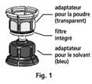
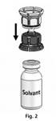
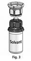
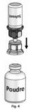
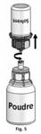

RÉSUMÉ DES CARACTÉRISTIQUES DU PRODUIT
ANSM - Mis à jour le : 10/12/2013
OCTAPLEX 500 UI, poudre et solvant pour solution pour perfusion
2. COMPOSITION QUALITATIVE ET QUANTITATIVE
OCTAPLEX se présente sous forme de poudre et solvant pour solution pour perfusion contenant un complexe prothrombique humain. OCTAPLEX contient nominalement:
|
Nom du composant |
OCTAPLEX |
OCTAPLEX |
|
|
Substances actives |
|||
|
Facteur II de coagulation humain |
280 - 760 |
14 - 38 |
|
|
Facteur VII de coagulation humain |
180 - 480 |
9 - 24 |
|
|
Facteur IX de coagulation humain |
500 |
25 |
|
|
Facteur X de coagulation humain |
360 - 600 |
18 - 30 |
|
|
Autres composants actifs |
|||
|
Protéine C |
260 - 620 |
13 - 31 |
|
|
Protéine S |
240 - 640 |
12 - 32 |
|
Le contenu en protéines totales par flacon est de 260 - 820 mg. L'activité spécifique du produit est ≥ 0,6 UI/mg de protéines, exprimée en activité du facteur IX.
Excipients à effet notoire: sodium (75-125 mg/flacon); héparine (100-250 UI/flacon soit 0,2 - 0,5 UI/UI FIX)
Pour la liste complète des excipients, voir rubrique 6.1.
Poudre et solvant pour solution pour perfusion.
La poudre est d'une couleur blanc-bleuté.
Le solvant est un liquide limpide et incolore.
4.1. Indications thérapeutiques
· Traitement des saignements et prophylaxie péri-opératoire des accidents hémorragiques lors d'un déficit acquis en facteurs de coagulation du complexe prothrombique, tel que le déficit induit par un traitement par anti-vitamines K, ou en cas de surdosage en anti-vitamines K, quand une correction urgente du déficit est requise.
· Traitement des saignements et prophylaxie péri-opératoire lors d'un déficit congénital en l'un des facteurs de coagulation vitamine K dépendants II et X, lorsque aucun facteur de coagulation spécifique de haute pureté n'est disponible.
4.2. Posologie et mode d'administration
Posologie
Les posologies recommandées ci-dessous sont données à titre indicatif. Le traitement doit être initié sous la surveillance d'un médecin spécialiste des troubles de la coagulation. La posologie et la durée du traitement de substitution dépendent de la sévérité du trouble, de la localisation et de l'intensité de l'accident hémorragique, ainsi que de l'état clinique du patient.
La dose et la fréquence d'administration doivent être calculées sur la base de chaque cas individuel. L'intervalle entre les administrations doit être adapté aux demi-vies, dans la circulation sanguine, des différents facteurs de coagulation du complexe prothrombique (voir rubrique 5.2).
La posologie individuelle peut uniquement être déterminée sur la base d'évaluations régulières limitées aux taux plasmatiques des facteurs de coagulation à corriger, ou sur la base d'évaluations globales des taux de complexe prothrombique (temps de prothrombine, INR), et en fonction du suivi continu de l'état clinique du patient.
Dans le cas d'interventions chirurgicales majeures, il est essentiel de réaliser un suivi précis du traitement de substitution à l'aide de tests de coagulation (tests spécifiques évaluant les facteurs de coagulation et/ou tests globaux évaluant les taux de complexe prothrombique).
Saignements et prophylaxie péri-opératoire des accidents hémorragiques lors d'un traitement par anti-vitamines K:
La dose nécessaire dépend de l'INR déterminé avant le traitement et de l'INR cible. Le tableau suivant donne les doses approximatives (ml de produit reconstitué/kg de poids corporel) nécessaires pour normaliser l'INR (≤ 1,2 en 1 heure) en fonction de l'INR initial.
|
INR initial |
2 - 2,5 |
2,5 - 3 |
3 - 3,5 |
> 3,5 |
|
|
Dose approximative* |
|
|
|
|
|
|
(ml OCTAPLEX/kg de poids corporel) |
0,9 - 1,3 |
1,3 - 1,6 |
1,6 - 1,9 |
> 1,9 |
* Une dose unique ne doit pas dépasser 3000 UI (120 ml d'OCTAPLEX).
La correction de la diminution de l'hémostase induite par les anti-vitamines K dure environ 6 à 8 heures. Toutefois, les effets de la vitamine K, si elle est administrée simultanément, sont habituellement obtenus en 4 à 6 heures. Aussi, un traitement répété par le complexe prothrombique humain n'est généralement pas nécessaire lorsque la vitamine K a été administrée.
Comme ces recommandations sont empiriques et que le taux de récupération et la durée de l'effet peuvent varier, le suivi de l'INR durant le traitement est obligatoire.
Saignements et prophylaxie péri-opératoire lors de déficit congénital des facteurs de coagulation vitamine K dépendants II et X, lorsque aucun facteur de coagulation spécifique n'est disponible:
Le calcul de la dose nécessaire pour le traitement repose sur la notion empirique qu'approximativement 1 UI de facteur II ou de facteur X par kg de poids corporel élève l'activité plasmatique du facteur II ou X de 0,02 et 0,017 UI/ml respectivement.
La posologie d'un facteur spécifique administré est exprimée en Unités Internationales (UI) par rapport au standard de l'OMS en vigueur pour chaque facteur. L'activité plasmatique d'un facteur de coagulation spécifique est exprimée soit en pourcentage (de l'activité normale du plasma humain) soit en Unités Internationales (par rapport au standard international pour le facteur de coagulation spécifique).
Une Unité Internationale (UI) de l'activité d'un facteur de coagulation correspond à la quantité de ce facteur contenue dans un ml de plasma humain normal.
Par exemple, la détermination de la posologie requise en facteur X est basée sur la notion empirique que 1 Unité Internationale (UI) de facteur X par kg de poids corporel augmente l'activité plasmatique de facteur X de 0,017 UI/ml. La posologie requise est déterminée en utilisant la formule suivante:
Unités requises = poids corporel (kg) x augmentation souhaitée en facteur X (UI/ml) x 59
où 59 (ml/kg) correspond à l'inverse du taux de récupération estimé.
Posologie requise pour le facteur II:
Unités requises = poids corporel (kg) x augmentation souhaitée en facteur II (UI/ml) x 50
Si le taux de récupération individuel est connu, cette valeur doit être utilisée pour le calcul.
Mode d'administration
Dissoudre le produit comme décrit en 6.6. OCTAPLEX doit être administré par voie intraveineuse. La perfusion doit débuter à la vitesse de 1 ml par minute, puis 2-3 ml par minute, en respectant les conditions d'asepsie.
Hypersensibilité au principe actif ou à l'un des excipients.
Allergie connue à l'héparine ou antécédents de thrombocytopénie induite par l'héparine.
4.4. Mises en garde spéciales et précautions d'emploi
L'avis d'un spécialiste des troubles de la coagulation doit être demandé.
Chez les patients présentant un déficit acquis en facteurs de coagulation vitamine K dépendants (par exemple induit par un traitement par anti-vitamines K), OCTAPLEX doit être utilisé uniquement lorsqu'une correction rapide du taux de complexe prothrombique est nécessaire, par exemple en cas d'hémorragie majeure ou d'urgence chirurgicale. Dans les autres cas, la diminution de la posologie des anti-vitamines K et/ou l'administration de vitamine K est habituellement suffisante.
Les patients traités par un anti-vitamine K peuvent présenter un état d'hypercoagulabilité sous-jacente qui peut être potentialisé par l'administration de concentré de complexe prothrombique.
En cas de déficit congénital de l'un des facteurs vitamine K dépendants, le facteur de coagulation spécifique doit être utilisé quand il est disponible.
En cas de réactions allergiques ou de type anaphylactique, la perfusion doit être immédiatement arrêtée. En cas de choc, le traitement symptomatique actuel de l'état de choc devra être instauré.
Les mesures standards pour prévenir les infections résultant de l'utilisation de médicaments préparés à partir de sang ou de plasma humain incluent la sélection des donneurs, la recherche de marqueurs spécifiques d'infection sur les dons individuels et les mélanges de plasma et l'inclusion d'étapes de fabrication efficaces pour l'inactivation/élimination virale.
Cependant, lorsque des médicaments préparés à partir de sang ou de plasma humain sont administrés, la possibilité de transmission d'agents infectieux ne peut être totalement exclue. Ceci s'applique aussi aux virus inconnus ou émergents et à d'autres agents pathogènes.
Les mesures prises sont considérées comme efficaces vis-à-vis des virus enveloppés tels que le VIH, le VHB et le VHC. Les mesures prises peuvent être d'efficacité limitée vis-à-vis de certains virus non-enveloppés tels que le VHA et le parvovirus B19. L'infection par le parvovirus B19 peut être sévère chez la femme enceinte (avec infection du fœtus) et chez les personnes atteintes de déficits immunitaires ou d'une augmentation de l'érythropoïèse (par exemple, l'anémie hémolytique).
Une vaccination appropriée (hépatite A et B) est recommandée pour les patients recevant de façon régulière/répétée des complexes prothrombiques dérivés du plasma humain.
Il existe un risque de thrombose ou de coagulation intravasculaire disséminée lorsque des patients présentant un déficit congénital ou acquis sont traités par du complexe prothrombique humain, particulièrement en cas d'administrations répétées. Les patients traités par un complexe prothrombique humain doivent être surveillés étroitement pour détecter les signes ou symptômes évocateurs d'une coagulation intravasculaire disséminée ou d'une thrombose. En raison du risque de complications thromboemboliques, un suivi étroit doit être réalisé lorsque un complexe prothrombique humain est administré aux patients présentant des antécédents de maladie coronarienne, aux patients atteints de maladie hépatique, aux patients en période péri- ou post-opératoire, aux nouveau-nés ou aux patients présentant un risque de manifestations thromboemboliques ou de coagulation intravasculaire disséminée. Dans chacune de ces situations, le bénéfice potentiel du traitement doit être évalué par rapport aux risques de ces complications.
Aucune donnée n'est disponible sur l'utilisation d'OCTAPLEX lors de saignement périnatal faisant suite à un déficit en vitamine K chez le nouveau-né.
OCTAPLEX contient 75 à 125 mg de sodium par flacon. A prendre en compte pour les patients ayant un régime pauvre en sodium.
4.5. Interactions avec d'autres médicaments et autres formes d'interactions
Le complexe prothrombique humain neutralise les effets d'un traitement par anti-vitamines K, mais aucune interaction avec d'autres spécialités pharmaceutiques n'est connue.
Interférence avec des tests biologiques:
Lorsque des tests de coagulation sensibles à l'héparine sont réalisés chez les patients recevant de hautes doses de complexe prothrombique humain, l'héparine contenue dans le produit administré doit être prise en compte.
La sécurité du complexe prothrombique chez la femme enceinte et lors de l'allaitement n'a pas été établie.
Les études chez l'animal ne permettent pas d'établir la sécurité pendant la grossesse, le développement embryo-fœtal, l'accouchement ou le développement post-natal. Aussi, le complexe prothrombique humain ne doit être administré au cours de la grossesse et de l'allaitement qu'en cas de nécessité absolue.
4.7. Effets sur l'aptitude à conduire des véhicules et à utiliser des machines
Aucune étude sur les effets sur l'aptitude à conduire des véhicules ou à utiliser des machines n'a été réalisée.
Affections du système immunitaire :
· Le traitement de substitution peut provoquer, dans de rares cas (≥1/10 000 et <1/1 000), la formation d’anticorps circulants inhibant un ou plusieurs facteurs du complexe prothrombique humain. La présence de tels inhibiteurs se traduit par une mauvaise réponse clinique.
· Des réactions allergiques ou de type anaphylactique et une augmentation de la température corporelle n'ont pas été observées lors des études cliniques menées avec OCTAPLEX mais peuvent survenir dans de rares cas (≥1/10 000 et <1/1 000).
Troubles généraux et anomalies au site d'administration :
· Une augmentation de la température corporelle n'a pas été observée mais peut survenir dans de rares cas (≥1/10 000 et <1/1 000).
Affections vasculaires :
· Il existe un risque de manifestations thromboemboliques après l'administration de complexe prothrombique humain (voir rubrique 4.4).
Affections du système nerveux :
· Des maux de tête peuvent survenir dans de rares cas (≥1/10 000 et <1/1 000).
Investigations :
· Une élévation transitoire des transaminases hépatiques a été observée dans de rares cas (≥1/10 000 et <1/1 000).
Autres :
OCTAPLEX contient de l’héparine. Par conséquent, une réaction allergique soudaine, déclenchant une diminution de la numération des plaquettes sanguines à une valeur inférieure à 100 000/µl ou de 50% de la numération initiale (thrombocytopénie de type II), peut être, dans de rares cas, observée. Chez les patients sans antécédents d'hypersensibilité à l'héparine, cette thrombocytopénie peut survenir 6 à 14 jours après le début du traitement. Chez les patients ayant des antécédents d'hypersensibilité à l'héparine, cette réaction peut survenir quelques heures après le début du traitement.
Le traitement avec OCTAPLEX doit être immédiatement interrompu chez les patients présentant cette réaction allergique. Ces patients ne devront plus recevoir des médicaments contenant de l’héparine à l’avenir.
Pour la sécurité virale, voir 4.4.
Déclaration des effets indésirables suspectés
La déclaration des effets indésirables suspectés après autorisation du médicament est importante. Elle permet une surveillance continue du rapport bénéfice/risque du médicament. Les professionnels de santé déclarent tout effet indésirable suspecté via le système national de déclaration : Agence nationale de sécurité du médicament et des produits de santé (Ansm) et réseau des Centres Régionaux de Pharmacovigilance - Site internet: www.ansm.sante.fr.
L'utilisation de doses élevées de complexe prothrombique humain a été associée à des cas d'infarctus du myocarde, de coagulation intravasculaire disséminée, de thrombose veineuse ou d'embolie pulmonaire. Aussi, en cas de surdosage, le risque de développement de complications thromboemboliques ou de coagulation intravasculaire disséminée est augmenté.
5. PROPRIETES PHARMACOLOGIQUES
5.1. Propriétés pharmacodynamiques
Classe pharmacothérapeutique: ANTIHEMORRAGIQUES, FACTEURS DE COAGULATION SANGUINE II, VII, IX ET X EN ASSOCIATION, Code ATC: B02BD01.
Les facteurs de coagulation II, VII, IX et X qui sont synthétisés dans le foie à l'aide de la vitamine K, forment le complexe prothrombique.
Le facteur VII est le zymogène du facteur VIIa (sérine protéase active) par lequel la voie extrinsèque de la coagulation est activée. Le complexe facteur tissulaire-facteur VIIa active les facteurs de coagulation X et IX, entraînant la formation des facteurs Xa et IXa. Suite à d'autres activations de la cascade de coagulation, la prothrombine (facteur II) est activée et transformée en thrombine. Sous l'action de la thrombine, le fibrinogène est converti en fibrine ce qui aboutit à la formation du caillot. La formation normale de thrombine est aussi d'une importance vitale pour la fonction plaquettaire dans l'hémostase primaire.
Un déficit sévère et isolé en facteur VII entraîne une baisse de la formation de thrombine et une tendance aux hémorragies dues au défaut de formation de fibrine et une diminution de l'hémostase primaire. Un déficit isolé en facteur IX est une des hémophilies classiques (hémophilie B). Les déficits isolés en facteur II ou X sont très rares mais dans les formes sévères se traduisent par des tendances hémorragiques similaires à celles observées dans l'hémophilie classique.
Un déficit acquis en facteurs de coagulation vitamine K dépendants survient lors de traitement par les anti-vitamines K. Quand le déficit devient sévère, une forte tendance hémorragique se développe, caractérisée par des saignements rétro-péritonéaux ou cérébraux, plutôt que des hémorragies musculaires et articulaires. Une insuffisance hépatique sévère peut également provoquer une baisse marquée des facteurs de la coagulation vitamine K dépendants, ainsi qu'un tableau clinique hémorragique qui est souvent complexe, dû à la fois à une coagulation intravasculaire continue, des taux de plaquettes réduits, un déficit en inhibiteurs de la coagulation et une fibrinolyse perturbée.
L'administration de complexe prothrombique humain augmente le taux plasmatique des facteurs de coagulation vitamine K dépendants et peut corriger temporairement le défaut de coagulation chez les patients présentant un déficit d'un ou plusieurs de ces facteurs.
5.2. Propriétés pharmacocinétiques
Les demi-vies plasmatiques sont de l'ordre de:
|
Facteur de coagulation |
Demi-vie |
|
|
Facteur II |
48 - 60 heures |
|
|
Facteur VII |
1,5 - 6 heures |
|
|
Facteur IX |
20 - 24 heures |
|
|
Facteur X |
24 - 48 heures |
OCTAPLEX est administré par voie intraveineuse et est donc immédiatement disponible dans l'organisme.
5.3. Données de sécurité préclinique
Il n'existe aucune donnée de sécurité préclinique pertinente pour la sécurité clinique, à l'exception des données présentées dans les autres sections du RCP.
Héparine: 0,2 - 0,5 UI/UI FIX
Citrate de sodium dihydraté
Solvant:
Eau pour préparations injectables
Ce médicament ne doit pas être mélangé avec d’autres médicaments.
La stabilité chimique et physique a été démontrée pendant un maximum de 8 heures à une température comprise entre +2°C et +25°C.
Du point de vue microbiologique, le produit doit être utilisé immédiatement. S’il n’est pas utilisé immédiatement, la durée et les conditions de conservation en cours d’utilisation sont de la responsabilité de l’utilisateur et ne devraient normalement pas dépasser 24 heures entre 2 et 8°C à moins que la reconstitution n’ait été réalisée dans des conditions d’asepsie contrôlées et validées.
6.4. Précautions particulières de conservation
A conserver à une température ne dépassant pas 25°C.
Ne pas congeler.
A conserver dans l’emballage d’origine à l’abri de la lumière.
Pour les conditions de conservation du médicament après reconstitution, voir rubrique 6.3.
6.5. Nature et contenu de l'emballage extérieur
Un emballage d’OCTAPLEX contient :
· Poudre en flacon (verre de type I) muni d’un bouchon (caoutchouc halobutyle) et d’un opercule détachable (aluminium)
· 20 ml d’eau pour préparations injectables en flacon (verre de type I ou de type II) muni d’un bouchon (caoutchouc halobutyle) et d’un opercule détachable (aluminium)
· 1 nécessaire de transfert Mix2Vial™.
6.6. Précautions particulières d’élimination et de manipulation
Lire toutes les instructions et les suivre soigneusement !
Durant la procédure décrite ci-dessous, des conditions d’asepsie doivent être maintenues !
Le produit se reconstitue rapidement à température ambiante.
La solution doit être limpide ou légèrement opalescente. Ne pas utiliser de solution trouble ou présentant des dépôts. Les produits reconstitués doivent être inspectés visuellement pour mettre en évidence la présence de particules et un changement de coloration avant administration.
La solution doit être utilisée immédiatement après reconstitution.
Tout produit non utilisé ou déchet doit être éliminé conformément à la réglementation en vigueur.
Instructions pour la reconstitution :
Si nécessaire, amener le solvant (eau pour préparations injectables) et la poudre, dans les flacons fermés, à température ambiante. Cette température doit être maintenue pendant la reconstitution.
Si un bain-marie est utilisé pour chauffer, une attention doit être portée pour que l'eau n’entre pas en contact avec les bouchons en caoutchouc ou les opercules des flacons. La température du bain-marie ne doit pas dépasser 37°C.
Retirer les opercules du flacon de poudre et du flacon de solvant et nettoyer les bouchons en caoutchouc à l'aide d'un tampon imbibé d'alcool.
Le nécessaire Mix2vial™ est représenté à la Fig. 1. Placez le flacon de solvant sur une surface plane et tenez-le fermement. Prenez le nécessaire Mix2vial™ et retournez-le. Placez la partie bleue du nécessaire Mix2vial™ sur le dessus du flacon de solvant et appuyez fermement jusqu'à ce qu'il s'enclenche (Fig. 2 + 3).
 
|
 |
Placer le flacon de poudre sur une surface plane et le tenir fermement. Prendre le flacon de solvant avec le nécessaire Mix2vial™ fixé et le retourner. Placer la partie transparente sur le dessus du flacon de poudre et appuyer fermement jusqu'à ce qu'il s'enclenche (Fig. 4). Le solvant s'écoule automatiquement dans le flacon de poudre. |
|
 |
Les deux flacons toujours fixés, agiter doucement le flacon de poudre jusqu'à ce que le produit soit dissous. OCTAPLEX se dissout rapidement à température ambiante pour donner une solution incolore à légèrement bleue. Dévisser le nécessaire Mix2vial™ en deux parties (Fig. 5). Eliminer le flacon de solvant vide avec la partie bleue du nécessaire Mix2vial™.
|
Si la poudre ne se dissout pas complètement ou si un agrégat s'est formé, ne pas utiliser la solution.
Instructions pour la perfusion :
Par précaution, le pouls du patient doit être pris avant et pendant la perfusion. En cas d'augmentation nette de la fréquence cardiaque, la vitesse de perfusion doit être réduite ou l'administration doit être interrompue.
1. Fixer une seringue de 20 ml à la partie transparente du nécessaire Mix2vial™. Retourner le flacon et prélever la solution dans la seringue.
Dès que la solution a été transférée, tenir fermement le piston de la seringue (en la tenant tournée vers le bas) et retirer la seringue du nécessaire Mix2vial™. Eliminer le nécessaire Mix2vial™ et le flacon vide.
2. Désinfecter le site d'injection avec une compresse imbibée d'alcool.
3. Injecter lentement la solution par voie intraveineuse avec un débit réduit : initialement 1 ml par minute, pas plus de 2 à 3 ml par minute.
Du sang ne doit pas refluer dans la seringue en raison du risque de formation de caillots de fibrine. Le nécessaire Mix2Vial™ est réservé à un usage unique.
7. TITULAIRE DE L’AUTORISATION DE MISE SUR LE MARCHE
OCTAPHARMA FRANCE
62 BIS AVENUE ANDRE MORIZET
92100 BOULOGNE BILLANCOURT
8. NUMERO(S) D’AUTORISATION DE MISE SUR LE MARCHE
· 566 106-0 ou 34009 566 106 0 0: Poudre en flacon (verre de type I) muni d'un bouchon (caoutchouc halobutyle) et d'un opercule détachable (aluminium) + 20 ml d'eau pour préparations injectables en flacon (verre de type I ou type II) muni d'un bouchon (caoutchouc halobutyle) et d'un opercule détachable (aluminium) + 1 nécessaire de transfert (1 aiguille de transfert et 1 aiguille filtre).
9. DATE DE PREMIERE AUTORISATION/DE RENOUVELLEMENT DE L’AUTORISATION
[à compléter par le titulaire]
10. DATE DE MISE A JOUR DU TEXTE
[à compléter par le titulaire]
Sans objet.
12. INSTRUCTIONS POUR LA PREPARATION DES RADIOPHARMACEUTIQUES
Sans objet.
Liste I
Médicament soumis à prescription hospitalière.